Overview
This project explores generative modeling through flow matching on MNIST. We start with a simple one-step denoiser, then progress to time-conditioned and class-conditioned UNets for iterative image generation. The core idea is to learn a velocity field that transforms noise into realistic images.
Key Concepts
- Denoising: Training a network to remove noise from images
- Flow Matching: Learning a velocity field from noisy to clean data
- Time Conditioning: Injecting timestep information into the network
- Class Conditioning: Controlling generation with class labels
- Classifier-Free Guidance: Improving quality through guidance strength
Part 1: Single-Step Denoising UNet
1.1: UNet Architecture
We implement a UNet consisting of downsampling and upsampling blocks with skip connections. The architecture uses standard operations:
UNet Operations
- Conv: Convolutional layer preserving resolution, changing channels
- DownConv: 2× downsampling convolutional layer
- UpConv: 2× upsampling transposed convolutional layer
- Flatten: Average pooling from 7×7 to 1×1
- Unflatten: Upsampling from 1×1 to 7×7
- Concat: Channel-wise concatenation with skip connections
The hidden dimension is set to D = 128 for learning capacity. Skip connections preserve spatial information through downsampling/upsampling stages.
1.2: Training Single-Step Denoiser
Given a clean image x1, we generate noisy training pairs using:
$$x_t = x_0 + \sigma \cdot \epsilon, \quad \epsilon \sim \mathcal{N}(0, I)$$where sigma controls noise level. The network learns to map noisy images back to clean ones using L2 loss.
1.2.0: Noise Visualization
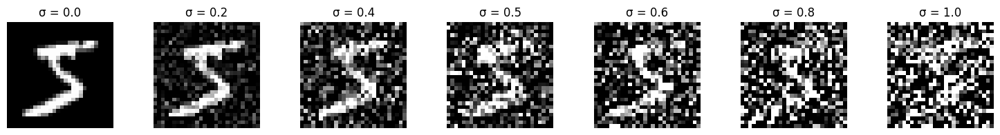
1.2.1: Training Results
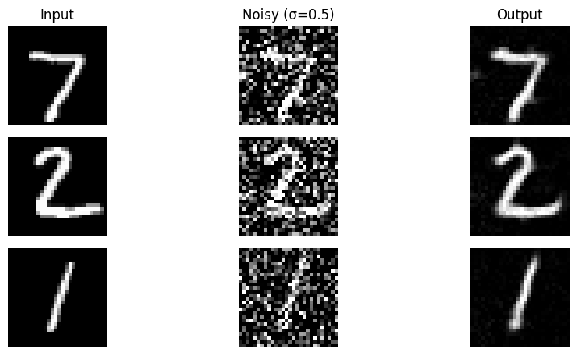
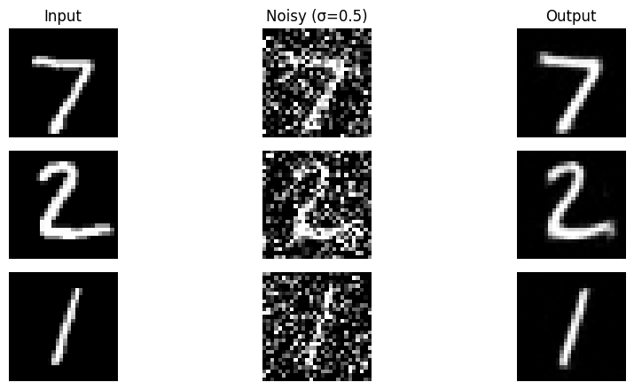
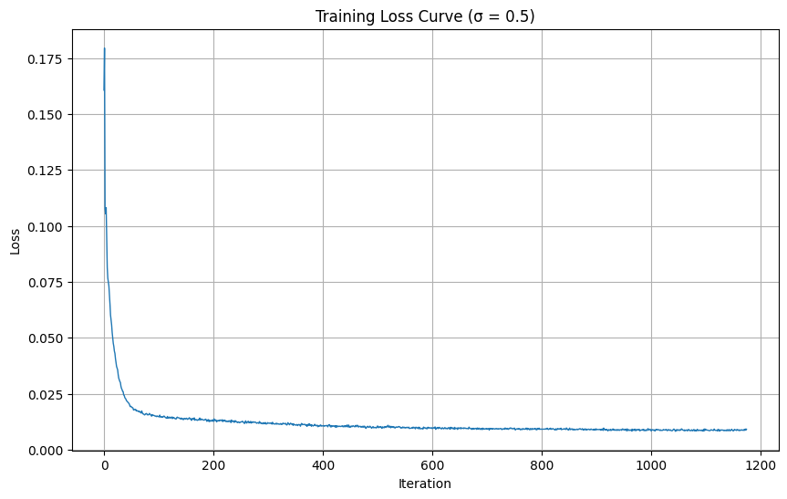
1.2.2: Out-of-Distribution Testing
The model was trained on sigma=0.5 but we evaluate on varying noise levels to test generalization:
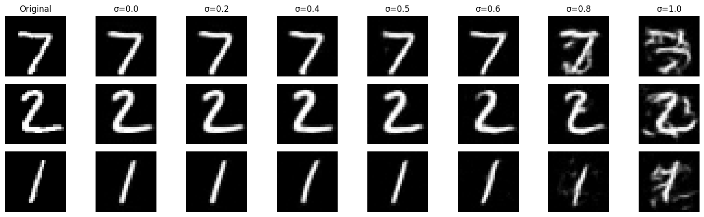
Observation
The denoiser performs well near sigma=0.5 (training condition) but degrades at extreme noise levels. This demonstrates that the model learned task-specific solutions rather than generalizable denoising principles.
1.2.3: Denoising Pure Noise
We retrain the model to denoise pure Gaussian noise (x₀ = noise), effectively turning this into a generative task:
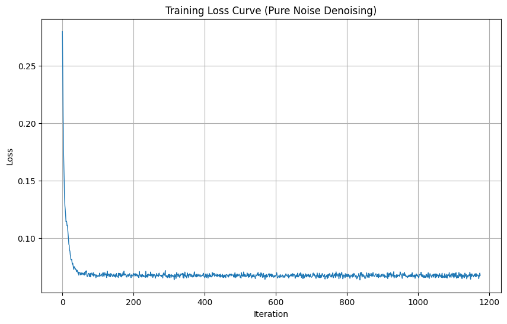
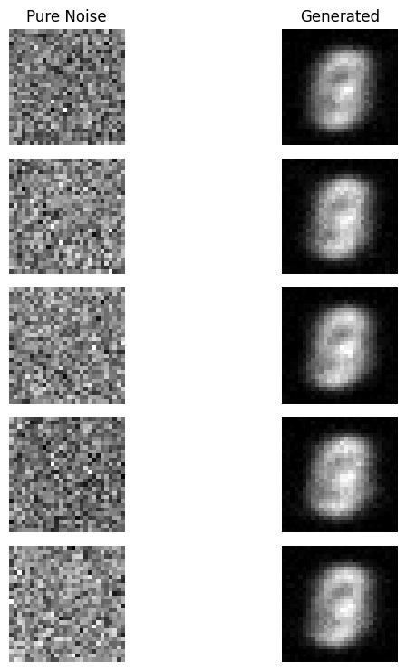
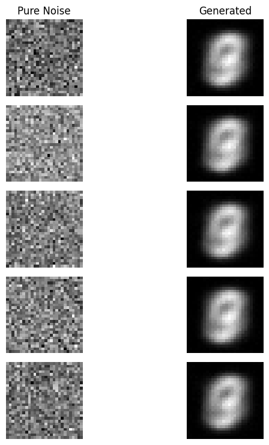
Pure Noise Denoising Analysis
Patterns Observed: The model generates blurry digit-like shapes but lacking details.
Why This Happens: With MSE loss, the network learns to predict the centroid/mean of all training images. When trained to denoise pure noise, it averages out all digits into a single indistinct blob. This is the fundamental limitation of one-step denoising for generation.
Part 2: Flow Matching & Time-Conditioned Generation
To improve generation quality, we transition to iterative denoising using flow matching. The key insight is to learn a velocity field that continuously transforms noise into clean data.
2.1: Time Conditioning
We inject scalar timestep t into the UNet using fully-connected blocks (FCBlocks). For each FCBlock layer:
$$\text{FCBlock}: t \rightarrow [F_{\text{hidden}}] \rightarrow F_{\text{out}}$$The embedding is applied through element-wise multiplication at key points in the network (unflatten and up1 layers), modulating the denoiser's behavior across different noise levels.
2.2: Training Time-Conditioned UNet
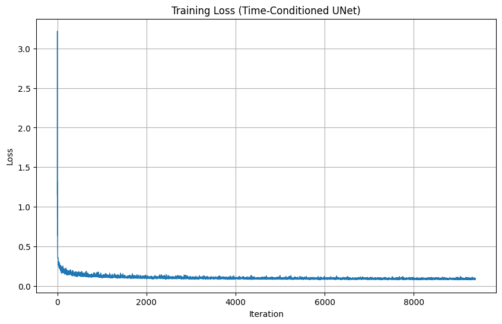
2.3: Sampling & Generation Results
Using the trained model, we iteratively denoise pure noise to generate MNIST digits. Sample quality improves significantly over training epochs:
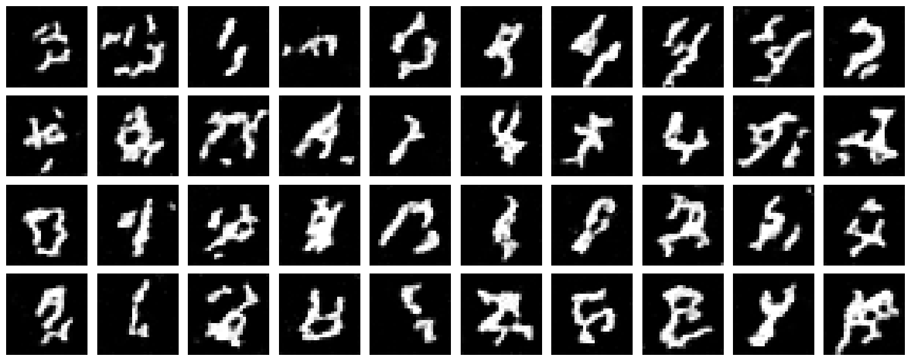
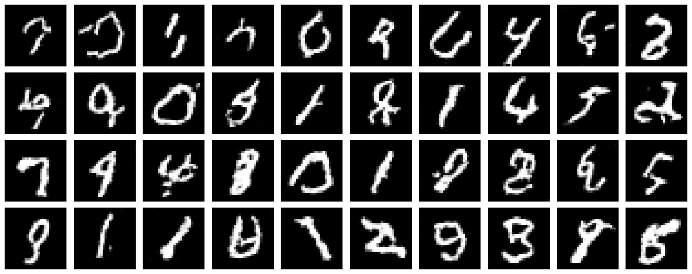
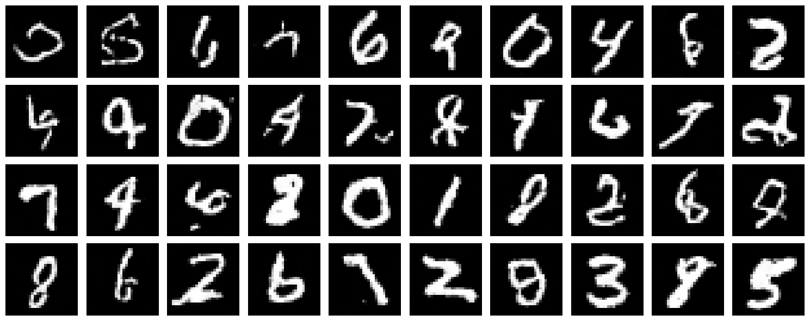
Generation Quality
While results show clear digit structures, they lack fine details compared to training data. This is expected given the simplified model and limited training time. Iterative denoising is fundamentally more powerful than one-step approaches.
Bells & Whistles: Improving Time-Conditioned UNet
The basic time-conditioned model produces reasonable but imperfect results. We implement several improvements:
Improvement 1: Extended Training Schedule
Approach: Train for 20 epochs instead of 10, allowing the network more opportunities to refine weights.
Result: Smoother generation with better digit structure and reduced artifacts.
Improvement 2: Increased Sampling Steps
Approach: Increase sampling timesteps from 50 to 100 for finer iterative refinement during generation.
Result: Higher quality generated images with smoother transitions between noise levels.
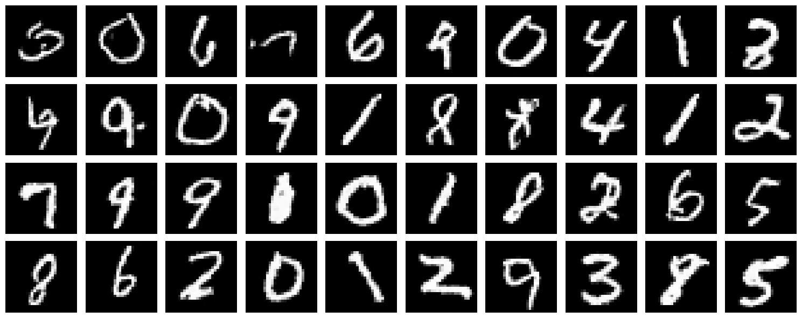
Improvement Summary
Best Result: Combining extended training (20 epochs) + increased sampling steps (100 timesteps) produces visibly cleaner, more coherent digit generation. More training time and finer-grained denoising steps lead to significantly improved generation quality.
2.4-2.5: Class-Conditioned UNet
We add class conditioning via one-hot vectors with 10% dropout for unconditional guidance capability:
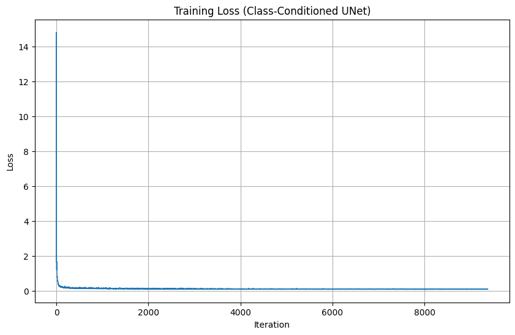
2.6: Sampling with Class Guidance
Using classifier-free guidance with scale γ = 5, we generate 4 instances of each digit 0-9:
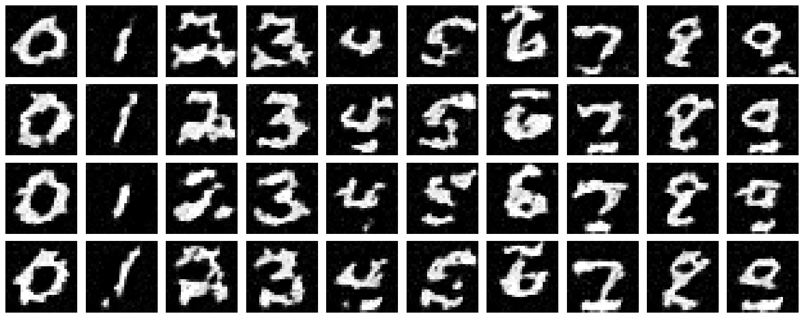
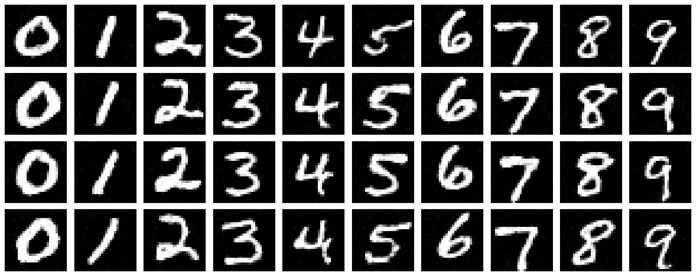
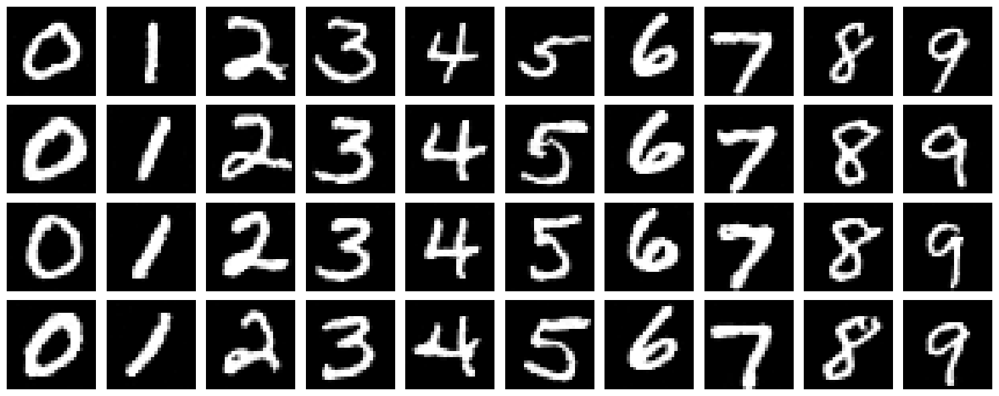
Class-Guided Generation
Class conditioning dramatically improves generation quality. The model learns to generate digits that are clearly recognizable by their class, with consistent style within each digit type. Guidance helps enforce semantic consistency.
Removing the Learning Rate Scheduler
We investigate whether the exponential LR scheduler is necessary for good performance:
Approach: Fixed Learning Rate Tuning
Strategy: Replace exponential decay with a fixed, higher learning rate. We found that $\text{lr} = 2 \times 10^{-2}$ with 20 epochs achieves comparable convergence without scheduler overhead.
Finding: A constant learning rate of $2 \times 10^{-2}$ maintains competitive performance without exponential decay complexity.
Benefit: Simpler training code and fewer hyperparameters.
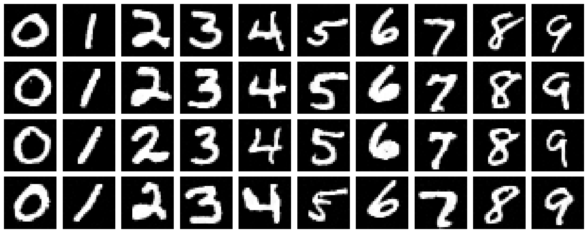
Scheduler Removal Summary
A constant learning rate of $2 \times 10^{-2}$ trained for 20 epochs achieves comparable final performance without exponential decay. Properly tuned fixed rates work exceptionally well for MNIST flow matching.
Conclusion
🎯 Key Learnings
- One-step denoising averages out to mode-seeking behavior (centroid)
- Iterative denoising with flow matching enables high-quality generation
- Time conditioning allows single network to handle all noise levels
- Class conditioning + guidance improves semantic control
- Architecture design and training duration significantly impact results
🔧 Technical Takeaways
- UNet with skip connections preserve spatial information
- FCBlocks enable modulation across timestep/class dimensions
- Classifier-free guidance (10% unconditional dropout) is essential
- Sinusoidal embeddings > linear embeddings for temporal signals
- Proper learning rate tuning can replace scheduler complexity